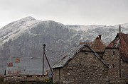
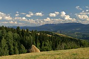
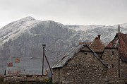
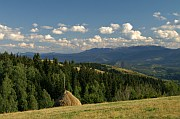

Disclaimer: These pages are not actively maintained, and some of the practical information on the site is out of date. I am working on a new version of the site that will focus more on my photos and memories of travel in Southeast Europe, and less on practical details that too easily become obsolete. In the meantime, please treat the information here with caution.
Bosnia and Herzegovina :: Introduction

In the last few years Bosnia has taken tentative steps towards being accepted as a "normal" tourist destination. Backpackers now routinely include a day or two in Sarajevo in their whistle-stop circuits of Eastern Europe, while summer holidaymakers take a break from the Croatian coast to spend a day wandering around Mostar's old town. Both places deserve their popularity and and are obvious candidates for inclusion in any tour of the Balkans. There is no shortage of other attractions for the relatively few travellers who dedicate a little more time to Bosnia. As well as the cultural and architectural treasures left by its complex history, the country is blessed with a memorable landscape of emerald rivers slicing through forbidding mountain ranges.
Where to go: some suggestions
Sarajevo may well be the most likeable capital city in the Balkans. It entices many visitors into staying longer than they had planned, eating čevapčići in the Ottoman old town, whiling away the afternoon over ice cream in the comfortable armchairs of a pavement cafe, or strolling along the tranquil Miljacka River to the Goat Bridge. In few other European capitals do the mountains feel so close; a walk around its hilly suburbs reveals a different panorama at each twist in the road.
Mostar is best known as the site of the the "Old Bridge", one of the greatest achievements of Ottoman architecture in the Balkans, now rebuilt after being destroyed in the war of the 1990s. The attractive old town can be explored in a couple of hours, leaving plenty of time to relax over coffee or a meal in one of the restaurants overlooking the Neretva River. Mostar is also a good base for a number of excursions in Herzegovina. The nearby Catholic pilgrimage centre of Međjugorje actually draws more foreign visitors than anywhere else in Bosnia, but there is little to see there for the casual tourist.
Outside of Sarajevo and Mostar, historical sites of interest include typical central Bosnian towns such as Travnik and Jajce, nestled beneath hilltop fortresses; the Dervish tekke at Blagaj, and the Radimlja necropolis at Stolac.
Travelling between any of these places will give you a taste of the Bosnian landscape. There is some fine casual walking around Bukovik mountain north of Sarajevo, but getting deeper into the mountains tends to require a little more planning, due to a general lack of information and the presence of mines in some areas. Bjelasnica Mountain near Sarajevo is particularly interesting, not just for the scenery but for the chance to vist isolated highland villages such as Lukomir. Further afield towards the border of Montenegro are the primeval forests of Sutjeska National Park, while Herzegovina also has some impressive mountain ranges. The lovely Neretva, Tara, and Una rivers also provide opportunities for rafting.
Practicalities

Transport
It's fairly easy to get around BiH by bus. Travel is not exactly speedy, due to the mountainous terrain, but the service is usually fairly reliable. There are good international bus links to neighbouring Serbia, Montenegro, and Croatia (including Split and Dubrovnik). Sarajevo has two bus stations serving different destinations - see the FAQ for more detail).
Train services in BiH are currently quite limited. The most popular train journey with tourists is the trip through the Neretva Valley from Sarajevo to Mostar. There are two daily trains on this line, both continuing to Ploče on the Croatian coast. There are day and night trains from Sarajevo via Banja Luka to Zagreb, and a direct daytime train to Budapest. Republika Srpska has a more extensive train network but most of the towns it connects are rarely visited by tourists.
It can be quite difficult to find cheap flights to Sarajevo. Many people combine a tour of Croatia with a few days in Sarajevo and Mostar - good bus connections make this an easy option.
Bosnia's difficult terrain has always been an obstacle to communication. If you find the slow pace of travel frustrating, remember that you have it easy compared to earlier travellers. In the late 19th century the 135km journey from Sarajevo to Mostar could take up to three days. In 1945 the whole of Bosnia had a total of 56km of asphalt road, including city streets.
Money
The currency is the Convertible Mark (konvertibilna marka or KM), which is accepted everywhere in BiH. Its value was originally pegged to the Deutschmark, and is now fixed at approximately 1.96 KM to the euro. Until a few years ago there were few international ATMs, but this has changed and you should now have no problem accessing cash in Sarajevo, Mostar or any other city. Despite the name, you are unlikely to be able to convert the KM anywhere outside BiH itself. Costs in Bosnia are generally lower than neighbouring Croatia, but it does depend on where you stay. Accommodation is reasonably good value in Sarajevo, better value in Mostar, and unpredictable elsewhere due to the relatively small range of places to stay.
Language
The people of BiH speak a group of Slavic languages (or dialects) known variously as Bosnian (or Bosniak), Serbian, and Croatian. In the Federation the Latin alphabet is always used, but you may see Cyrillic script in RS. Unless you are heading off the usual tourist beat it is probably not worth learning the Cyrillic alphabet just for Bosnia. Finding English speakers should be no problem in Sarajevo or Mostar, where people are very much accustomed to foreigners.
Safety
Some potential visitors have concerns about safety. Many of these worries are unfounded, but there are some issues you should be aware of, particularly if you will be hiking off the beaten path. I have discussed this in more detail in the FAQ.
A Bluffer's Guide to Bosnia
It's useful to know a little bit about Bosnia's political structure before you go there, so that you don't find yourself confused by references to mysterious places called "The Federation" and "RS". This has been described by The Bosnian Institute as "perhaps the most complex, not to say contradictory, political structure of any country in the world", so pay attention.
Let me start by noting that Bosnia and Herzegovina is sometimes referred to simply as Bosnia for convenience, although this is not strictly correct. The abbreviation BiH, for Bosna i Hercegovina, is also used to make clear that the reference is to the country as a whole.
Since the Dayton Agreement of 1995, Bosnia and Herzegovina has been a single country consisting of two entities. These entities are not called Bosnia and Herzegovina; each entity includes part of Herzegovina (the southern portion of the country) and part of Bosnia. One of these entities is called the Federation of Bosnia and Herzegovina (not to be confused with the country of Bosnia and Herzegovina). It's often known simply as the Federation, occupies 51% of the country's land area, and is populated mainly by Muslims and Catholics. The Federation is further subdivided into cantons, so called in the hope that giving them a Swiss name will lead to centuries of amiable coexistence. The second entity is known as Republika Srpska or RS (not to be confused with the independent country of Serbia, which is also a republic). RS has a majority population of Orthodox Serbs, and is not divided into cantons. Many of its institutions are based in Banja Luka, but in theory its capital is Sarajevo, which is also the capital of the Federation. And of BiH. As you can imagine, there are a lot of civil servants in Sarajevo. Various government departments, parliaments, and layers of bureaucracy operate at all these levels. Ruling over all of them is the "international community", represented by an individual known as the His Excellency the Lord High Grand Vizier. Or something like that.
(If you are now saying to yourself "he's forgotten to mention the special status of the Brčko district", you know far too much about Bosnia to waste your time reading this. Anyway, I didn't forget, I left it out to keep things simple. Well, simpler. Also I don't actually know what's so special about it).
What does all this mean for the tourist? Very little. The border between the two entities is invisible and you can wander freely across it. There are few visual cues to indicate which side you are on, except that the locals on one side have two heads (which side depends on your own prejudices). You may see bus timetables with separate lists of inter-entity, inter-cantonal, and intra-cantonal routes; you are more likely to see Cyrillic script in RS. As yet RS has made little effort to attract foreign tourists so you may find information about it harder to come by. Of the places mentioned in the "where to go" section above, only Sutjeska National Park is in RS.
 



More photos in my Bosnia and Herzegovina Galleries